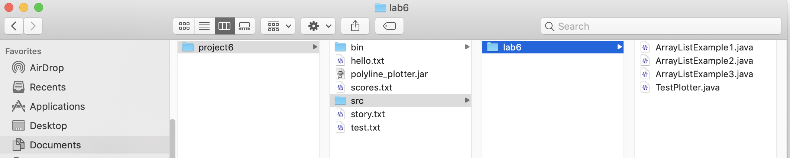

Why Recursion?
The examples we have seen so far are all easy to implement using simple loops. There are many problems that are difficult using only loops, but are straightforward to solve using recursion.
One such example is printing out the names of all the files beneath a directory. Directories may contain files or other directories, which may in turn contain files or other directories, which may in turn contain files or other directories, and so on. There is no straightforward way of using a loop to iterate over a potentially complex hierarchy of directories to print all the filenames.
Before going further, let's notice that by contrast, it's easy to iterate over just the direct contents of one directory. For example, if you open up your project from last week's lab using File Explorer or Finder, you might see a hierarchy like this:

That is, you have the project directory project, which contains five files, hello.txt, polyline_plotter.jar, scores.txt, story.txt, and test.txt. But it also contains two subdirectories, src and bin. The src directory contains one subdirectory lab6, which contains the various java files used in the lab. The bin directory is similar.
The Java class File abstractly represents a pathname identifying an element of the filesystem, which could be a file or a directory, and it includes the following methods:
- The
isDirectory()method, which returns true if theFileobject represents a directory, and - the
listFiles()method, which (for a directory) returns an array ofFileobjects representing the directory's contents.
package lab7;
import java.io.File;
public class FileTest
{
public static void main(String[] args)
{
File f = new File("../project6");
System.out.println("Does it exist? " + f.exists());
System.out.println("Is this a directory? " + f.isDirectory());
System.out.println();
// list the direct contents of the project6 directory
File[] files = f.listFiles();
for (int i = 0; i < files.length; ++i)
{
System.out.println(files[i].getName());
}
}
}
You should see output something like:
scores.txt bin .classpath .settings story.txt .project polyline_plotter.jar test.txt hello.txt src(The filenames starting with a dot are "hidden" files that are normally not shown when you examine your filesystem using File Explorer or Finder.)
The problem we are really trying to solve is not just to list the files and directory names directly contained in a directory, but to also dig down into the subdirectories and list all the files they contain, and into their subdirectories, and so on. What we need is a method that we can call to list all files beneath, say, the bin and src directories.
Notice that this is a recursive problem. That is, a solution to the problem can be described in terms of a solution to its sub-problems: we can easily list the files below a given directory, provided we have a method to list the files below a subdirectory. Each item in a file hierarchy is either a file or a directory. If it's a file, we just print its name. If it's a directory, then iterate over the items it contains, and list each one. In pseudocode:
to print a listing of all files below f
if f is a file
print the file name
else
let arr = array of files in f
for each item g in arr
print listing of all files below g
The following code prints out the names of all files starting with the project6 directory. (If you named your project for lab 6 something else, you'll need to edit the code accordingly.) Notice the difference in the output versus the FileTest code above. Running the FileLister below, each time a directory is encountered, we immediately jump down into it and list its contents before continuing with the files at the previous level.
package lab7;
import java.io.File;
public class FileLister
{
public static void main(String[] args)
{
// Choose the directory you want to list.
// If running in Eclipse, "." will just be the current project directory.
// Use ".." to list the whole workspace directory, or enter a path to
// some other directory.
File rootDirectory = new File("../project6");
listAllFiles(rootDirectory);
}
/**
* Print the names of all items in the hierarchy located under
* a given directory. If the given File object is not a directory,
* just prints the file's name.
*/
public static void listAllFiles(File f)
{
if (!f.isDirectory())
{
// Base case: f is a file, so just print its name
System.out.println(f.getName());
}
else
{
// Recursive case: f is a directory, so go through the
// files and directories it contains, and recursively call
// this method on each one
System.out.println("+" + f.getName());
File[] files = f.listFiles();
for (int i = 0; i < files.length; ++i)
{
listAllFiles(files[i]);
}
}
}
}
Could you have done this with a loop? Techincally, yes. All recursive methods can be written without using recursion. However, the code is much more complex and difficult to write. To solve the file lister problem nonrecursively, you have to manually keep track of which items in which directories still need to be processed.